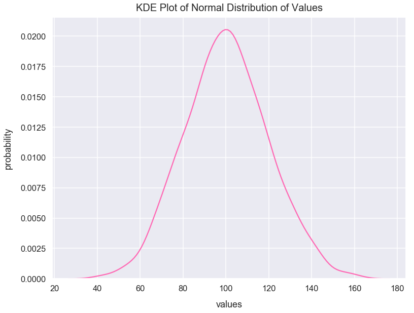
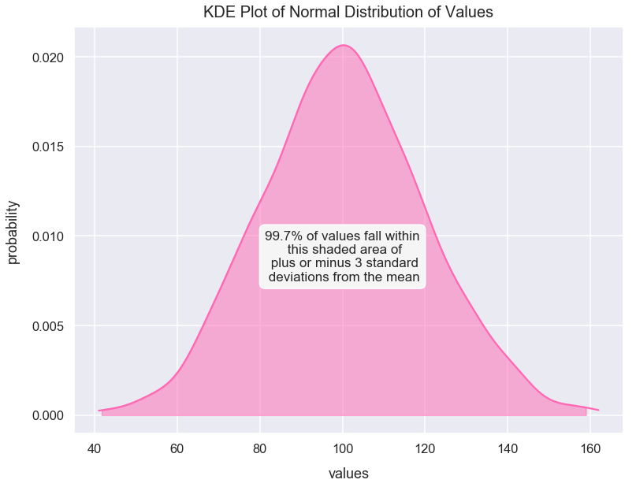

Normal Distribution
- Nov 30 • 6 min read
- Key Terms: normal distribution, standard deviation, python, pandas
A normal distribution has values in which the data has no bias left or right from its central value.
Many sets of data closely follow a normal distribution including:
- heights of people
- grades on tests
Import Modules
import seaborn as sns
import numpy as np
import scipy
import warnings
import matplotlib.pyplot as plt
% matplotlib inline
I turn warnings off in this post because of an issue in Scipy that will be fixed in a later version.
warnings.filterwarnings('ignore')
Visualization styling code
sns.set(rc={'figure.figsize':(12.5, 9.5)})
sns.set_context('talk')
Example 1: Build a Normal Distribution
Using the numpy package's random module, we can call the normal() method to create a list of values with a normal distribution by setting the following arguments:
locas the mean of the distributionscaleas the standard deviation of the distributionsizeas number of samples
np.random.seed(4) # seed random number generator with fixed value so we always get same values below
normal_distr_values = list(np.random.normal(loc=100, scale=20, size=1300))
normal_distr_values = [int(value) for value in normal_distr_values]
Below is a plot of a histogram of these values that resemble a normal distribution.
sns.distplot(normal_distr_values, kde=False, color='hotpink')
plt.title("Normal Distribution of Values", fontsize=20, y=1.012)
plt.xlabel("values", labelpad=15)
plt.ylabel("frequency", labelpad=15);

This curve above is often called a "bell curve" since it looks like a bell seen below.
When we say the data is "normally distributed", the normal distribution should have the following characteristics:
- symmetry about the center
- mean = median = mode
- roughly 50% values less than the mean and 50% greater than the mean
From a visual standpoint, it looks like our distribution above has symmetry around the center.
Let's check the mean, median and mode values are roughly equal to one another.
Mean of Values
mean = round(np.mean(normal_distr_values), 3)
mean
100.325
Median of Values
median = round(np.median(normal_distr_values), 3)
median
100.0
Mode of Values
mode = scipy.stats.mode(normal_distr_values)
mode
ModeResult(mode=array([101]), count=array([35]))
100 equals 100 which is very close to 101. So, it seems in this dataset that the mean, median and mode are the same values.
Verify 50% of values less than mean and 50% above mean
count_values_above_mean = 0
for value in normal_distr_values:
if value>=mean:
count_values_above_mean+=1
count_values_above_mean
643
count_values_below_mean = len(normal_distr_values) - count_values_above_mean
count_values_below_mean
657
643 values are above the mean and 657 values are below the mean. This roughly fits our criteria to help prove that this is a normal distribution.
Standard Deviations with a Normal Distribution
For the normal_distr_values we plotted above in a histogram. I can also plot it in KDE form which you can simply think of as a line of best fit to smooth out the histogram. You can learn more about KDE plots in Python through this great Jake Vanderplas article.
Below is our result.
sns.distplot(normal_distr_values, rug=False, hist=False, color='hotpink')
plt.title("KDE Plot of Normal Distribution of Values", fontsize=20, y=1.012)
plt.xlabel("values", labelpad=15)
plt.ylabel("probability", labelpad=15);

Let's calculate the values for one, two and three positive standard deviations from the mean of normal_distr_values, and one, two and three negative standard deviations from the mean of normal_distr_values.
plus_one_std_dev = np.mean(normal_distr_values) + np.std(normal_distr_values)
minus_one_std_dev = np.mean(normal_distr_values) - np.std(normal_distr_values)
plus_two_std_dev = np.mean(normal_distr_values) + 2*np.std(normal_distr_values)
minus_two_std_dev = np.mean(normal_distr_values) - 2*np.std(normal_distr_values)
plus_three_std_dev = np.mean(normal_distr_values) + 3*np.std(normal_distr_values)
minus_three_std_dev = np.mean(normal_distr_values) - 3*np.std(normal_distr_values)
Since we have a normal distribution, the following logic on standard deviations applies to this dataset.
Here's a Stack Overflow article with good code on how to use shading under plots in Matplotlib.
kde = scipy.stats.gaussian_kde(normal_distr_values)
pos = np.linspace(min(normal_distr_values), max(normal_distr_values), 50000)
plt.plot(pos, kde(pos), color='hotpink')
shade = np.linspace(minus_one_std_dev, plus_one_std_dev, 300)
plt.fill_between(shade, kde(shade), alpha=0.5, color='hotpink',)
plt.text(x=100.5, y=.0085, horizontalalignment='center', fontsize=17,
s="68% of values fall within\n this shaded area of\n plus or minus 1 standard\n deviation from the mean",
bbox=dict(facecolor='whitesmoke', boxstyle="round, pad=0.25"))
plt.title("KDE Plot of Normal Distribution of Values", fontsize=20, y=1.012)
plt.xlabel("values", labelpad=15)
plt.ylabel("probability", labelpad=15);

kde = scipy.stats.gaussian_kde(normal_distr_values)
pos = np.linspace(min(normal_distr_values), max(normal_distr_values), 5000)
plt.plot(pos, kde(pos), color='hotpink')
shade = np.linspace(minus_two_std_dev, plus_two_std_dev, 300)
plt.fill_between(shade, kde(shade), alpha=0.5, color='hotpink',)
plt.text(x=100, y=.0075, horizontalalignment='center', fontsize=17,
s="95% of values fall within\n this shaded area of\n plus or minus 2 standard\n deviations from the mean",
bbox=dict(facecolor='whitesmoke', boxstyle="round, pad=0.4"))
plt.title("KDE Plot of Normal Distribution of Values", fontsize=20, y=1.012)
plt.xlabel("values", labelpad=15)
plt.ylabel("probability", labelpad=15);

kde = scipy.stats.gaussian_kde(normal_distr_values)
pos = np.linspace(min(normal_distr_values), max(normal_distr_values), 5000)
plt.plot(pos, kde(pos), color='hotpink')
shade = np.linspace(minus_three_std_dev, plus_three_std_dev, 300)
plt.fill_between(shade, kde(shade), alpha=0.5, color='hotpink',)
plt.text(x=100, y=.0075, horizontalalignment='center', fontsize=17,
s="99.7% of values fall within\n this shaded area of\n plus or minus 3 standard\n deviations from the mean",
bbox=dict(facecolor='whitesmoke', boxstyle="round, pad=0.4"))
plt.title("KDE Plot of Normal Distribution of Values", fontsize=20, y=1.012)
plt.xlabel("values", labelpad=15)
plt.ylabel("probability", labelpad=15);
